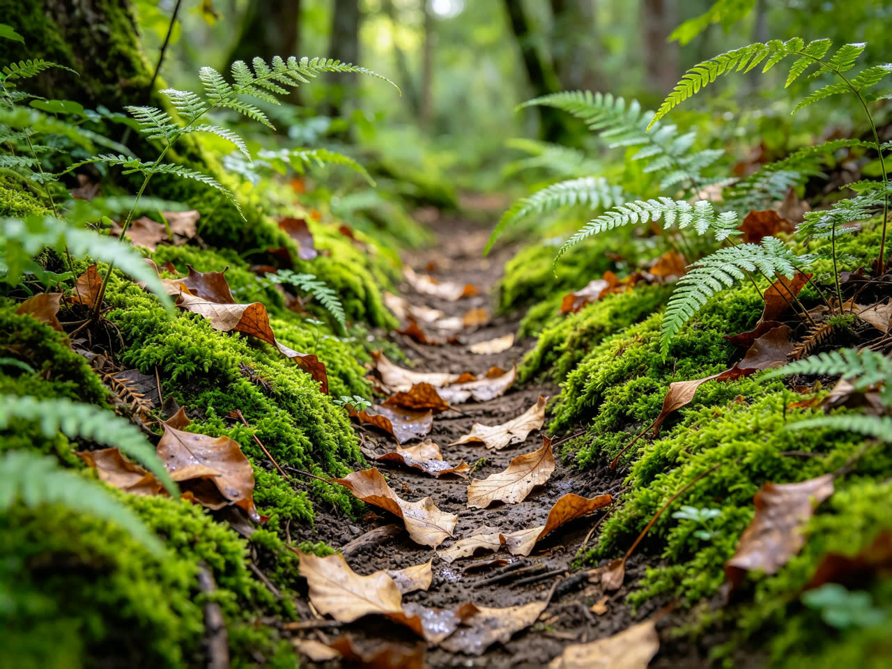
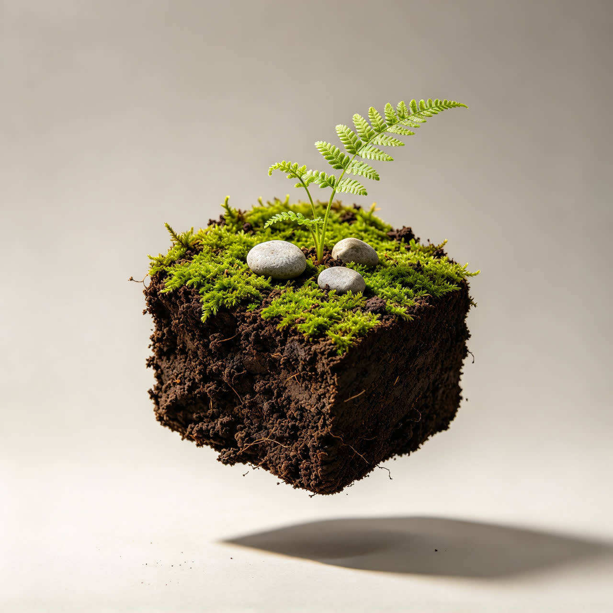
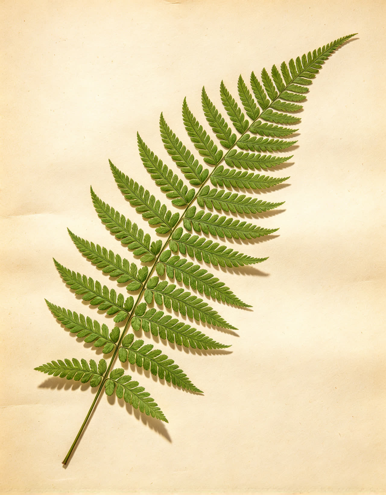
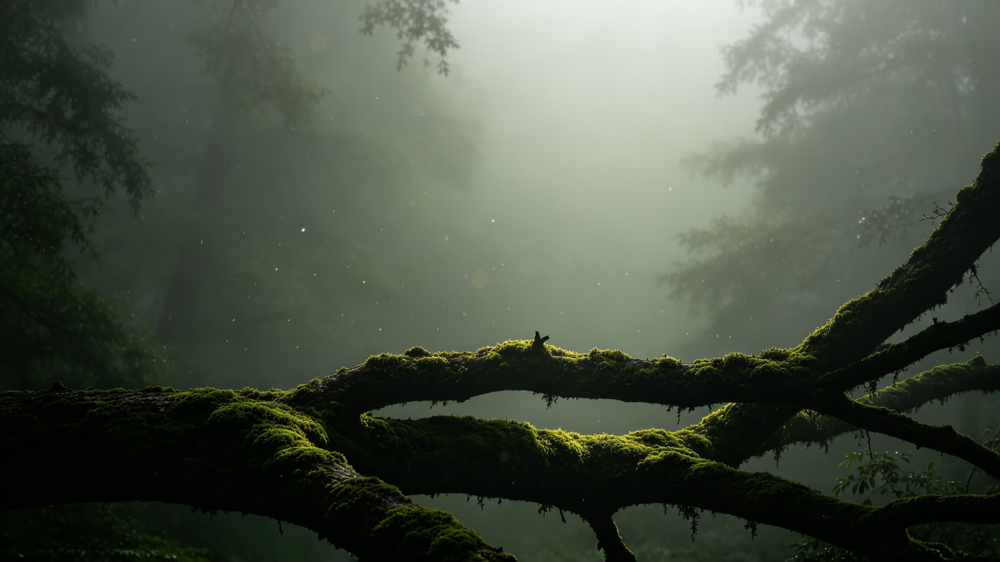

Field reader
For a quiet start at home.
$0/ always
- Digital pocket field guide
- Three observation exercises

We restore wild places through careful planting, native species, and a quieter kind of stewardship.
From the first soil reading to the first new shoot, every visit begins with a closer look.
Follow the water after a rain. Moss, exposed roots, and patches of bare soil show us where to begin.
Ground cover, ferns, shrubs, and canopy natives go in together so the system holds moisture on its own.
We keep coming back to record growth, replace losses, and let the woody plants take over.


We came back to the grove before the paths had dried. At the edge of the clearing, the smallest things had changed.
I used to walk straight through this clearing. Now I rarely leave before dark.
The patch we left alone became the first place we looked each spring.

Read at your own pace, or look closer on foot.

For a quiet start at home.

For a morning in the grove.
Illustrative pricing in USD
